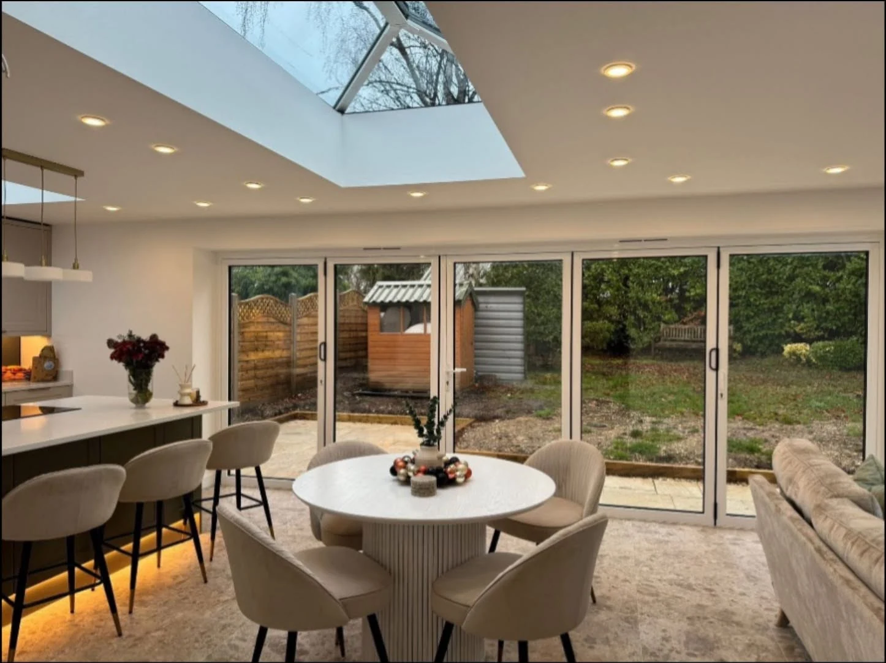
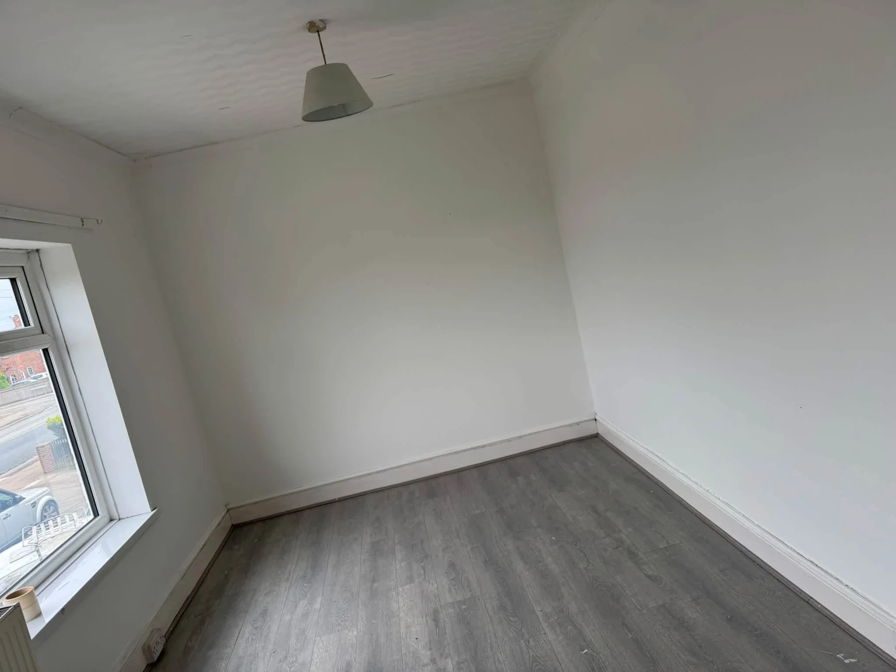
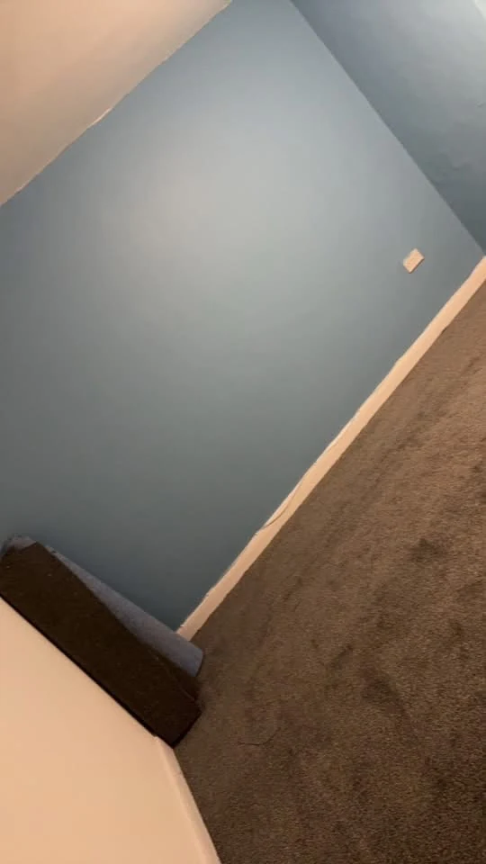

A NEW LOOK STARTS HERE
Refresh your everyday.
A lighter room. A new colour. Woodwork that feels finished again. LS Painting & Decorating takes enquiries for interior and exterior painting, wallpaper removal, doors and outdoor spaces.
Share photographs of the area and the result you have in mind. We can discuss preparation, finishes and the scope of your project.
Tell us about your space →

THE LS PROJECT PHOTOS
A fresh canvas.
Two views of the same white room show the walls, doorway, window and woodwork. Tap a photograph to see the whole space.
Interior painting →LS PROJECT DETAILS
From surface to finish.
Preparation, painted surfaces and a different colour direction from the LS room projects.
A DIFFERENT MOOD
A little more colour.
A blue room with a contrasting white skirting line. Share your preferred colour and finish when you enquire.
COLOUR & ROOM INSPIRATION
Find your direction.
Room ideas to help you describe the look you want, from soft bedroom tones to a stronger hallway contrast.
LS PAINTING & DECORATING
Big changes.
Small details.
Walls, woodwork and outdoor surfaces all need their own approach. Tell LS about the condition of the space, the colours you like and the finish you want to achieve.
Send overview photos and close-ups of any areas needing preparation.
Share colours, surfaces and whether you need wallpaper removed.
Confirm location, access, scope, quote and availability before booking.
GET A QUOTE
What needs a refresh?
Choose a service and tell us about the job. The form opens WhatsApp with your enquiry ready to review and send. You can add photos there.
Include your postcode so coverage can be confirmed, plus approximate room sizes, surface condition and preferred timescales.
Your details are only shared when you send the message. Privacy information.GOOD TO KNOW
A few answers.
What can I enquire about?
Interior painting, exterior painting, wallpaper removal, woodwork and doors, fencing and outdoor spaces.
How do I check your coverage?
Send your postcode with your enquiry so the location and project availability can be confirmed.
What helps with a quote?
Photos, approximate room or surface sizes, details of the existing finish and any preparation needed. Mention access and preferred dates.
Can I ask about one room?
Yes. Tell us which room, what needs painting and whether ceilings, doors or woodwork are part of the job.
Do you remove wallpaper?
Wallpaper removal is listed among the services. Share photos and explain the finish you want afterwards.
Can I ask about outdoor painting?
Send photographs of the exterior surface, fence or outdoor area, including its condition and access.
Can I send my colour ideas?
Yes. Include colour references and the finish you prefer, so the paint and preparation can be discussed.
LS PAINTING & DECORATING
Ready for a fresh finish?
Call us or send a few photos on WhatsApp.